Dry polishing with lapping film sheets was tested, but new scratches appeared during fine polishing.
Research Project
Mineralogical Study of Dolomite in the Orgueil CI1 Chondrite: Constraining the Formation Conditions of Primitive Chondritic Constituents
Chronological record of my undergraduate graduation research: Mineralogical Study of Dolomite in the Orgueil CI1 Chondrite: Constraining the Formation Conditions of Primitive Chondritic Constituents.
Ongoing
Cosmic Mineralogy
CI1 Chondrite
Dolomite
Clay Minerals
SEM / EPMA / TEM
The sample was polished without water using #3000, #4000, #6000, #8000, #10000, and #15000 lapping film sheets; polishing above #4000 produced new scratches.
What mineralogical conditions controlled dolomite formation in primitive CI1 chondritic material?
Embed newly obtained Orgueil particles again at the Mineralogy Laboratory, Waseda University, with Associate Professor Taiga Okumura.
Project Info
Mineralogical Study of Dolomite in the Orgueil CI1 Chondrite: Constraining the Formation Conditions of Primitive Chondritic Constituents
This project investigates dolomite in the Orgueil CI1 chondrite at micro- to nanometre scales. The aim is to constrain the formation conditions of primitive chondritic constituents by examining dolomite morphology, chemical composition, crystallographic features, and its spatial relationship with clay-rich regions.
The planned approach combines SEM/EPMA observations, single-grain XRD, and TEM observations to connect occurrence, morphology, chemical composition, and crystallographic features.
Mission Index
Mission LogLatest first
Each entry follows a fixed scientific record structure: Context → Operation → Observation → Interpretation → Next Action.
LOG 005
SOL 041 / 2026-05-11
Mission Log 005 · Dry polishing and resin re-impregnation plan
After discussion with Associate Professor Taiga Okumura, the preparation route was changed to dry polishing because CI chondrite material should not be exposed to water.
The embedded sample was polished using #3000, #4000, #6000, #8000, #10000, and #15000 lapping film sheets.
The polishing result was not satisfactory. New scratches appeared when polishing beyond #4000.
Based on previous NASA preparation documentation, the resin probably did not fully penetrate the meteorite material; small mineral grains may detach during polishing and repeatedly produce fine scratches.
A possible treatment is surface re-impregnation with resin followed by renewed polishing. Because this route is complicated, new Orgueil particles obtained from Professor Takashi Mikouchi will be embedded and prepared again at Waseda with Associate Professor Taiga Okumura.
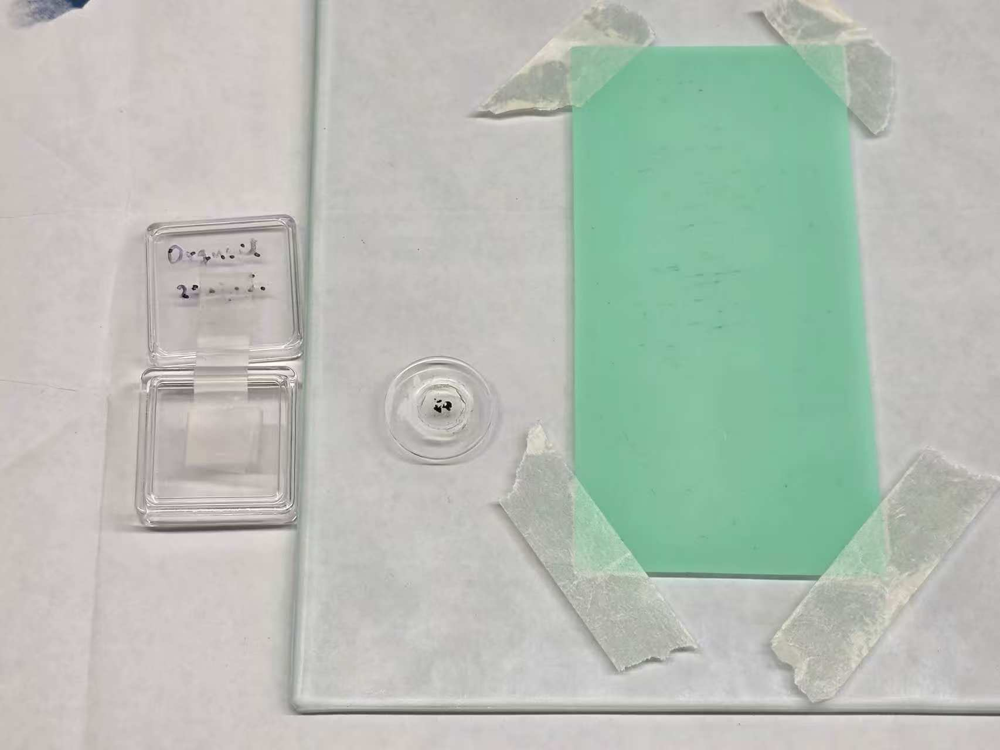
LOG 004
SOL 031 / 2026-05-01
Mission Log 004 · Isomet cutting with ethanol cooling
The resin-embedded Orgueil sample had been mounted on a glass slide and was ready for mechanical cutting at The University Museum, The University of Tokyo.
The mounted sample was cut using an IsoMet saw. Ethanol, not water, was used as the cooling liquid. Rotary-disc polishing was then tested using #1000, #3000, and 3 µm diamond paste.
Cutting was completed, but the subsequent polishing result was not fully satisfactory.
Water-free cutting with ethanol is compatible with the preparation constraint, but the polishing sequence still requires optimisation for this fragile, fine-grained CI material.
Bring the sample to Waseda University and consult Associate Professor Taiga Okumura about the next preparation strategy.
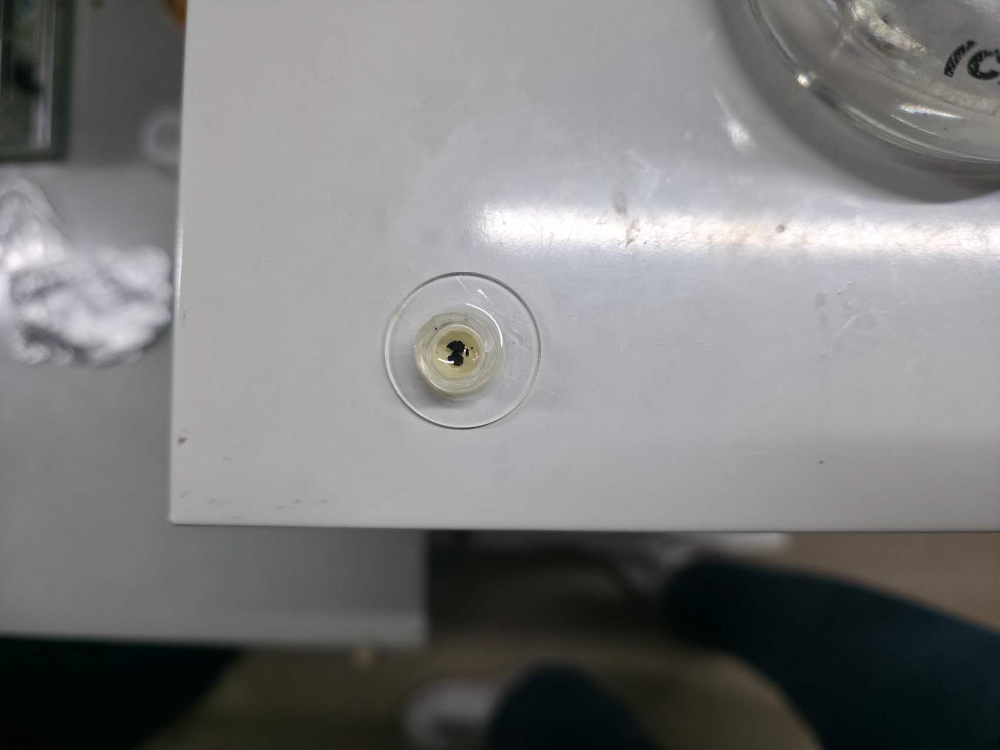
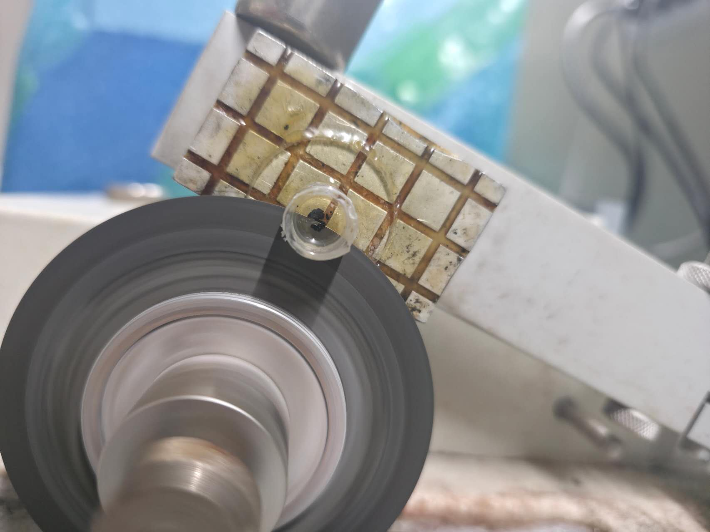
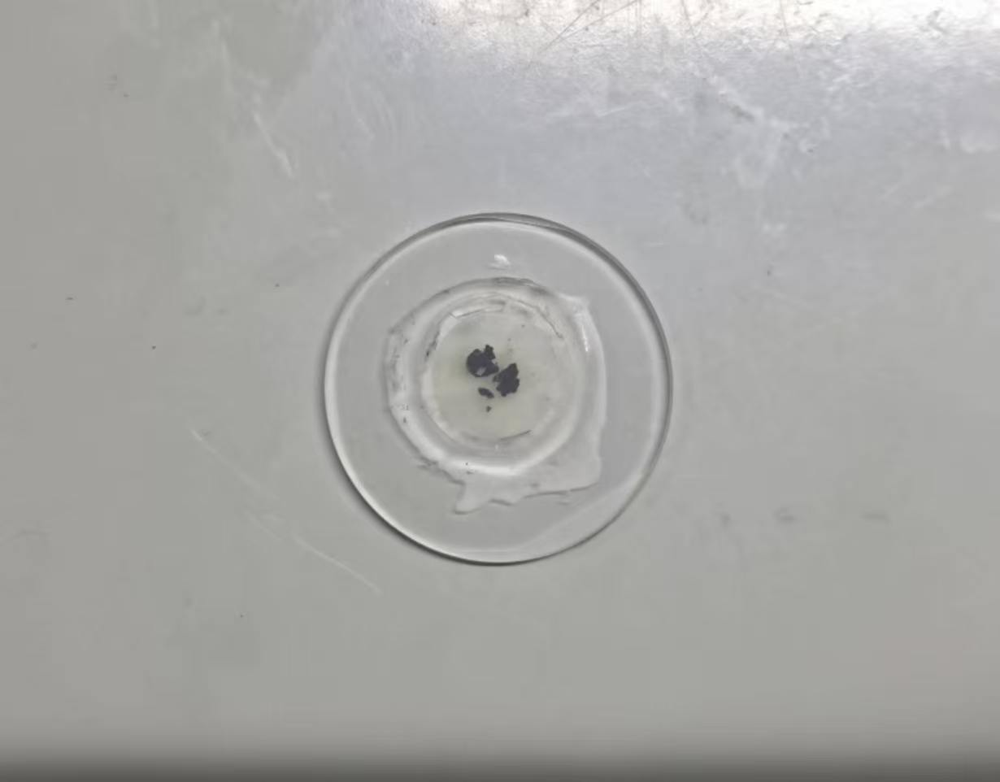
LOG 003
SOL 027 / 2026-04-27
Mission Log 003 · Cutting preparation and glass-slide mounting
The Petropoxy 154 mount had cured and required mechanical support before further cutting.
The cured resin-embedded sample was cut and adjusted, then attached to a glass slide with adhesive. The mounted assembly was kept at 80 °C for one day to cure the adhesive.
A stable sample–glass assembly was obtained for the next cutting step.
Glass-slide mounting improves handling stability and reduces the risk of losing fragile Orgueil material during subsequent processing.
Proceed to IsoMet cutting while avoiding water exposure.
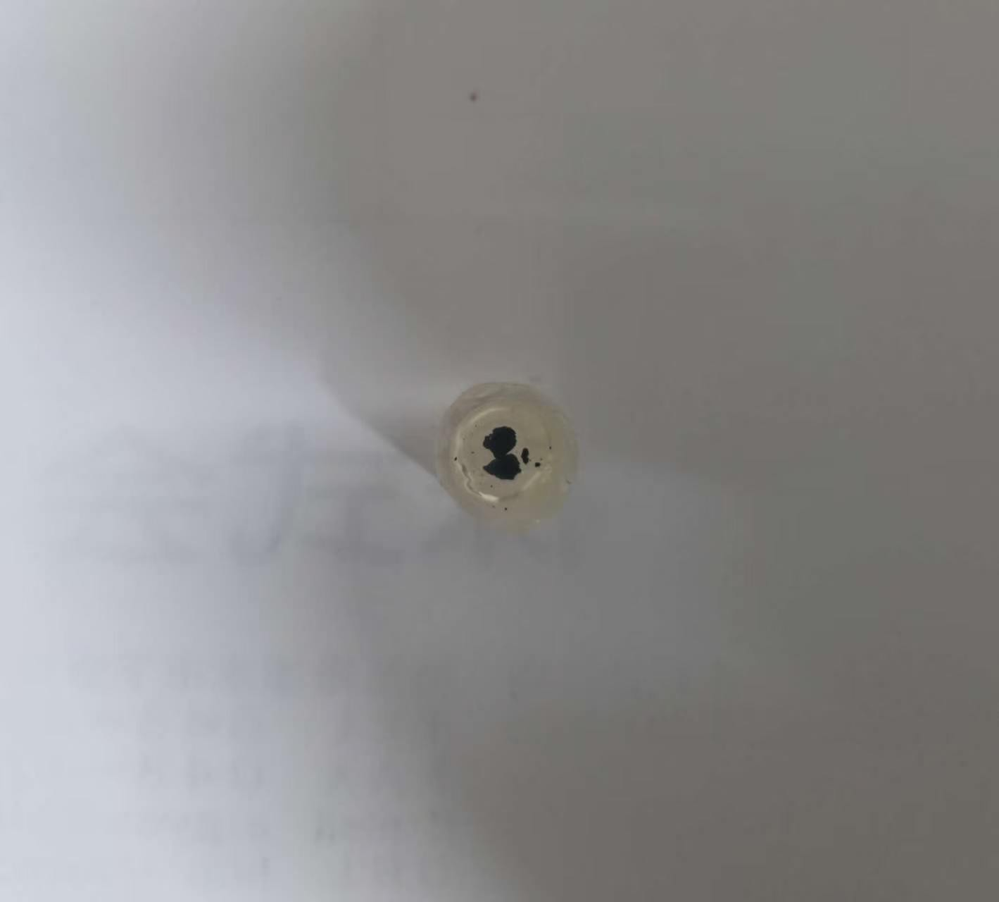
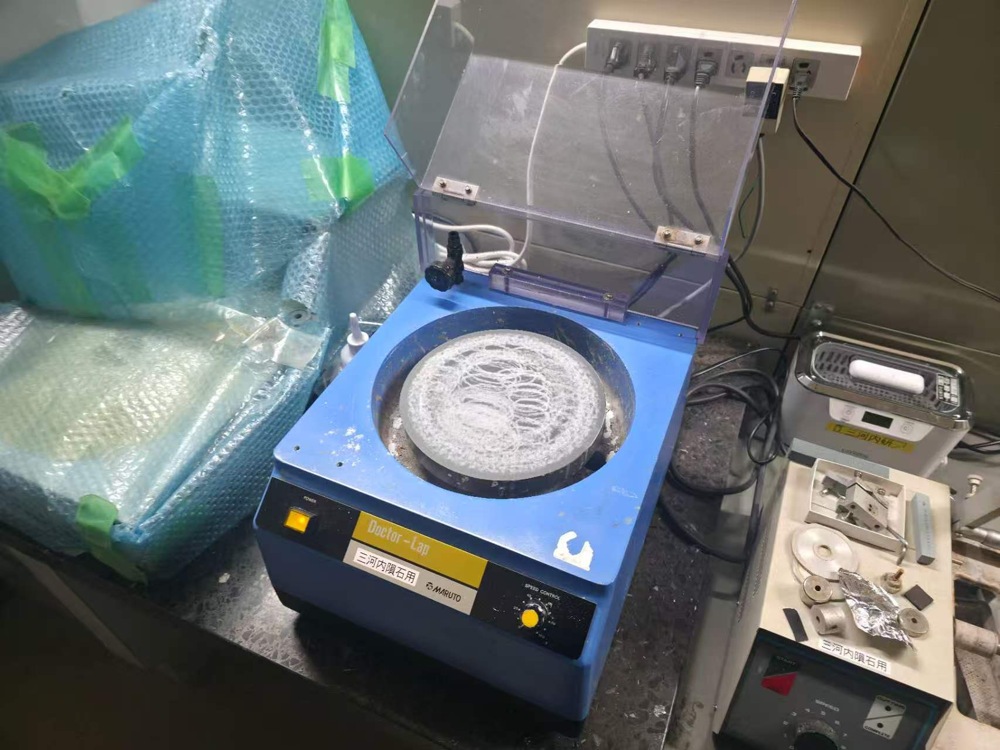
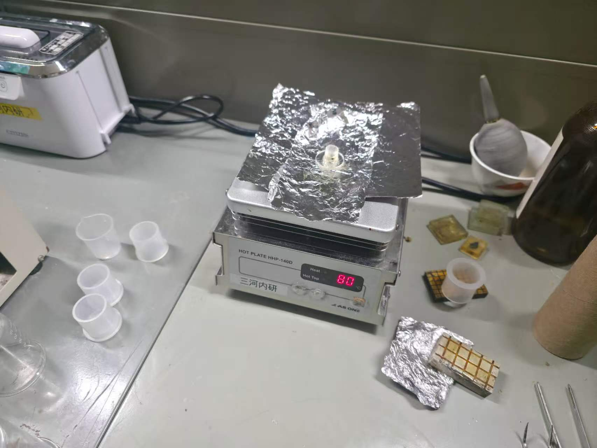
LOG 002
SOL 020 / 2026-04-20
Mission Log 002 · Orgueil particles embedded in Petropoxy 154
Orgueil particles were obtained from Professor Takashi Mikouchi for the first sample-preparation trial at The University Museum, The University of Tokyo.
The particles were embedded in Petropoxy 154, vacuum-impregnated, and thermally cured at 80 °C for one day.
A cured Petropoxy 154 mount containing Orgueil particles was obtained.
Embedding was intended to stabilise fragile CI1 material before cutting and polishing. The degree of resin penetration became a critical preparation issue in later polishing tests.
Prepare the cured mount for cutting, glass-slide mounting, and subsequent surface preparation.
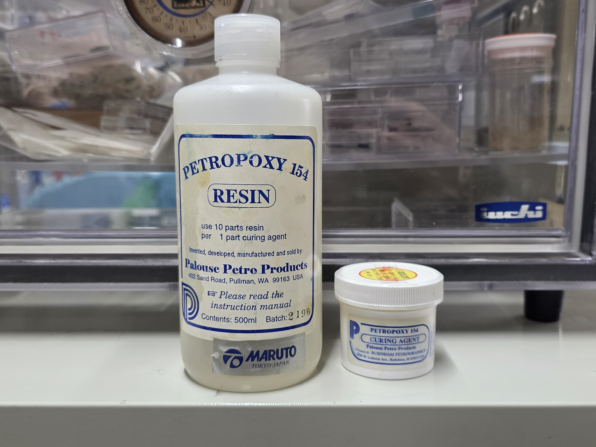
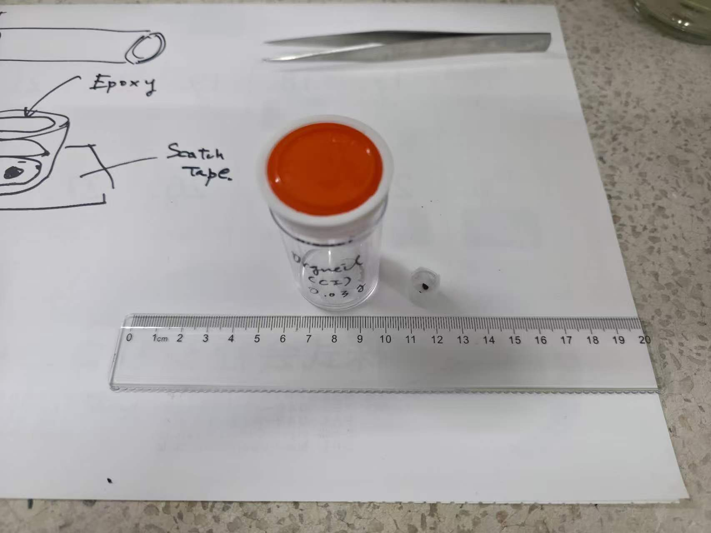
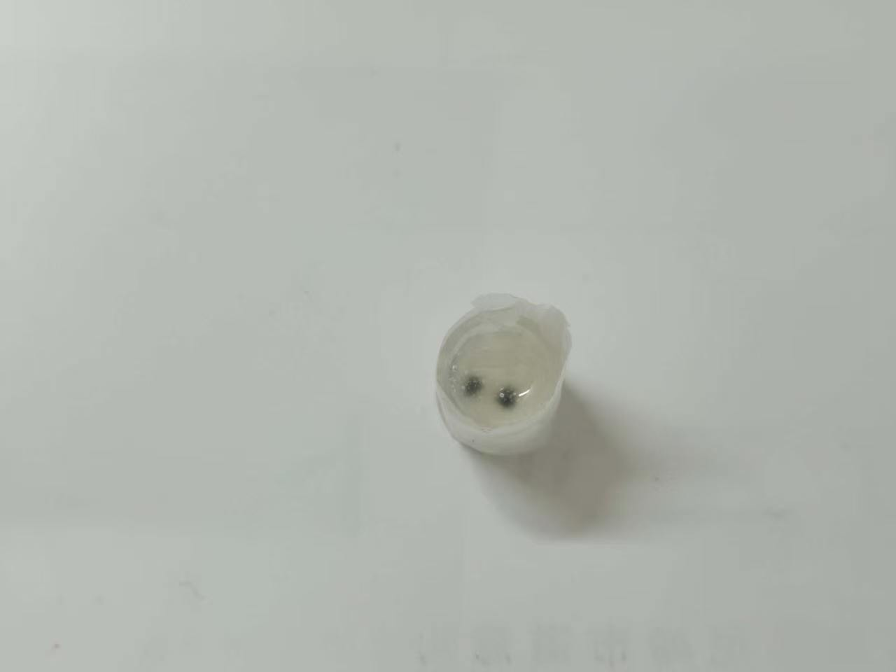
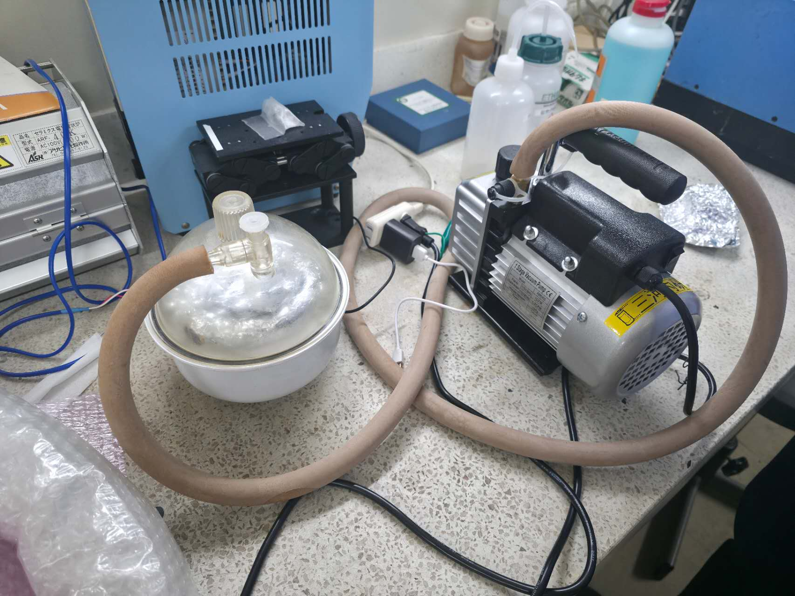
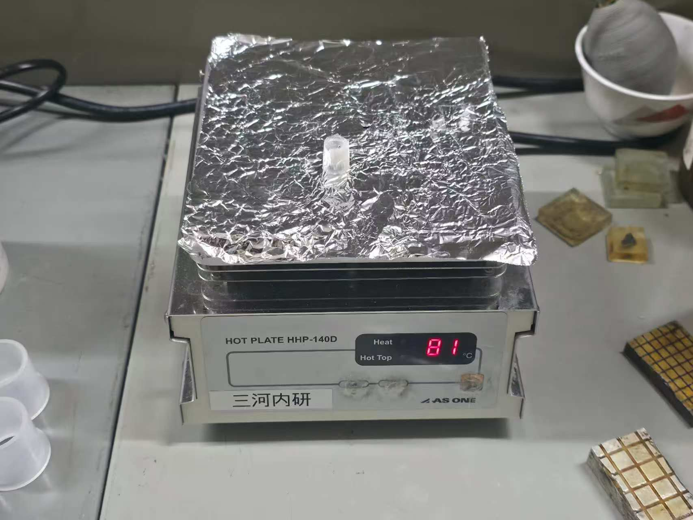
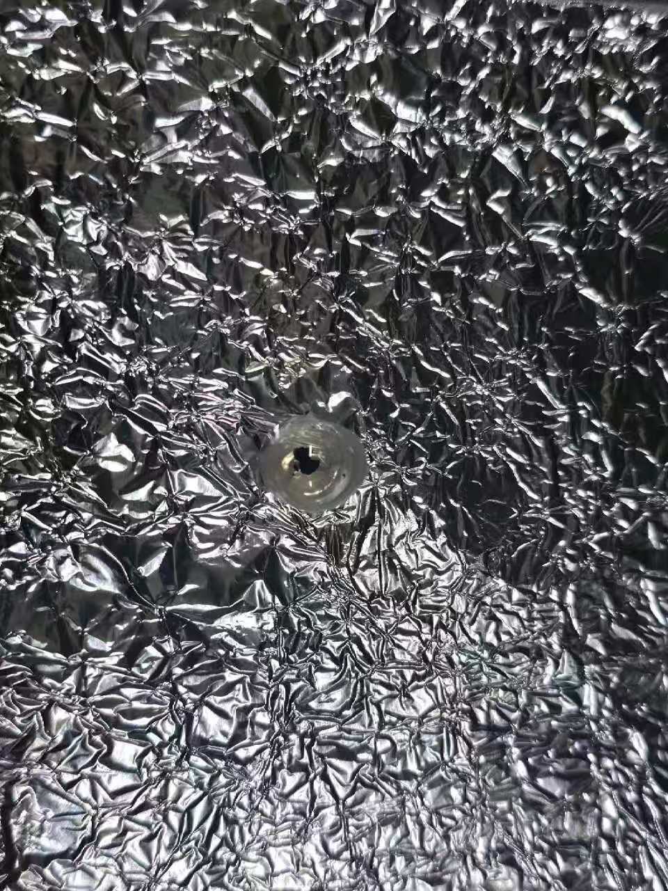

LOG 001
SOL 001 / 2026-04-01
Mission Log 001 · Graduation research plan established
The graduation research project was established around dolomite in the Orgueil CI1 chondrite and its relation to primitive chondritic constituents.
The initial research framework was defined around mineral occurrence, morphology, chemical composition, and crystallographic features.
The project requires connecting dolomite-bearing regions, clay-rich domains, and micro- to nano-scale mineralogical textures.
A combined workflow using SEM/EPMA, single-grain XRD, and TEM is necessary to constrain formation conditions across multiple scales.
Obtain Orgueil material and begin sample preparation for analytical observation.
Analytical Pathway
From target grain to formation model
01Sample selection
Identify suitable Orgueil CI1 material and carbonate-bearing regions.
02SEM / BSE observation
Document morphology, texture, and spatial relation to clay-rich areas.
03EPMA mapping
Constrain elemental distribution and carbonate chemistry.
04Single-grain XRD
Investigate crystallographic features and carbonate ordering.
05TEM / EDS / diffraction
Resolve nanoscale interface, defects, and microstructural constraints.
06Formation condition model
Integrate observations to discuss primitive chondritic constituent formation.